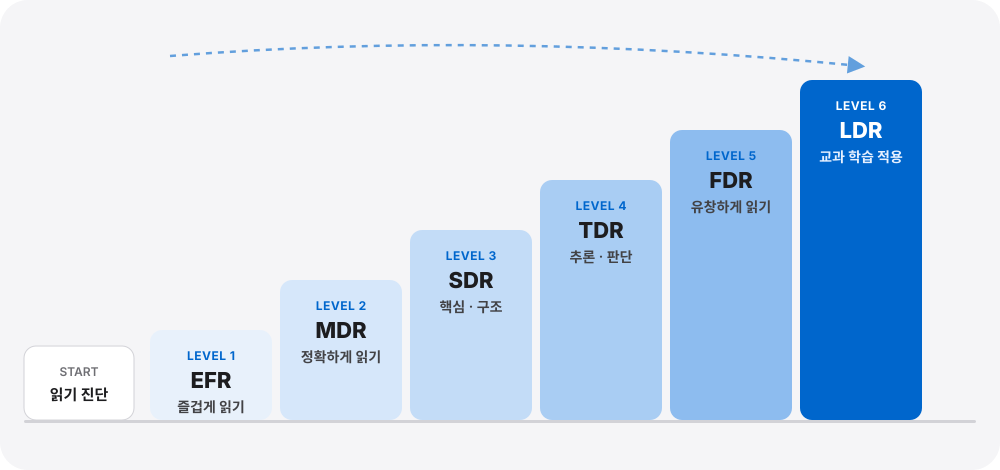

읽는 방법이 바뀌면
공부하는 방법이 달라집니다.
대충 읽는 습관에서 제대로 읽는 상위 1%의 읽기 능력이 1%의 성적을 만듭니다.
READING SYSTEM
진단에서 교과 학습까지
진단에서 교과 학습까지
6단계 읽기 시스템

 START읽기 능력 진단
START읽기 능력 진단-
 LEVEL 1EFREasy Fun Reading
LEVEL 1EFREasy Fun Reading즐겁게 읽기
- 독서 흥미
- 기초 어휘
- 내용 이해
- 읽기 자신감
-
 LEVEL 2MDRMemory Deep Reading
LEVEL 2MDRMemory Deep Reading정확하게 읽기
글을 대충 훑어 읽는 습관에서 벗어나 핵심어를 찾고 의미를 연결하며 정확하게 읽는 방법을 훈련합니다.
- 중급 어휘
- 문단 읽기
- 핵심어 파악
- 의미 연결
- 내용 구조화
- 이해 · 기억
- 인출
-
 LEVEL 3SDRStrategic Deep Reading
LEVEL 3SDRStrategic Deep Reading핵심과 구조를 파악하며 읽기
글의 핵심 내용을 찾고, 문단과 문단의 관계를 연결하여 글 전체의 구조와 흐름을 파악하는 전략적 읽기를 훈련합니다.
- 고급 어휘
- 문단 핵심 파악
- 문단 관계 연결
- 구조화
- 전체 흐름 이해
-
 LEVEL 4TDRThinking Deep Reading
LEVEL 4TDRThinking Deep Reading생각하고 추론 · 판단하며 읽기
성독으로 문장의 의미와 흐름을 정확하게 확인하고, 묵독으로 글 속 정보를 연결하여 숨은 의미와 글쓴이의 의도를 추론합니다. 나아가 주장과 근거를 따져 보고 정보의 타당성을 판단하며 자신의 생각을 만들어 가는 사고 독서 능력을 키웁니다.
- 정확한 의미 파악
- 정보 연결
- 추론
- 근거 검토
- 판단
- 생각 확장
-
유창하게 읽기
정확한 이해를 유지하면서 읽기의 속도와 흐름을 높여, 많은 정보를 효율적으로 처리하고 긴 글도 빠르게 이해하는 읽기 능력을 키웁니다.
- 의미 단위 읽기
- 정확하고 유창한 읽기
- 이해 속도 향상
- 정보처리 능력 향상
-
 LEVEL 6LDRLearning Deep Reading
LEVEL 6LDRLearning Deep Reading교과 학습에 적용하기
읽기 훈련의 완성, 교과 학습과 성적으로!
교과서를 정확하게 읽고 핵심 개념과 내용 구조를 파악하며, 학습한 내용을 기억하고 인출하는 능력을 훈련합니다. 교과 문제 해결력과 논 · 서술형 표현력을 강화하여 실제 학습 성과로 연결합니다.
- 교과 정독
- 핵심 · 구조 파악
- 기억 · 인출
- 문제 해결
- 논 · 서술형 표현
- 학습 적용
RESULT
읽기 능력의 변화가 교과 학습의 변화로,
읽기 능력의 변화가 교과 학습의 변화로,
교과 학습의 변화가 성적의 변화로 이어집니다.
교과 이해력 향상
논 · 서술형 평가 역량 강화
국어 학습 능력 향상
실제 학습 사례로 확인된
국어 100점모의평가 1등급